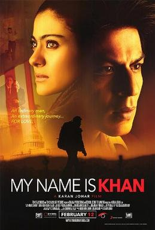

For 2013 film, see My Name Is Khan (2013 film).
Content
Rizwan Khan is an autistic Muslim child who grew up with his brother Zakir and his mother in a middle-class family in Borivali, Mumbai. His autism leads to special tutoring from a reclusive scholar and extra attention from his mother, all which leads to a heightened level of jealousy from Zakir, who eventually leaves his family for a life in San Francisco. Despite this, Zakir sponsors Rizwan to come and live with him after their mother's death. Zakir's wife Haseena diagnoses Rizwan as having Asperger’s syndrome. Rizwan also begins to work for Zakir's company, and meets a Hindu woman Mandira Rathore and her young son Sameer "Sam" Rathore, born from a previous marriage. Despite Zakir's uncertainty, they marry and live in the fictional locality of Banville, where Mandira and Sam surname themselves with "Khan." They also live next door to the Garrick family, comprising Mark and his wife. Sam is close to their young son Reese.
Shah Rukh Khan as Rizwan Khan, Mandira's husband and Sameer's adoptive father and stepfather Kajol as Mandira Khan / Rathore, Rizwan's wife and Sameer's mother Sonya Jehan as Haseena Khan, Zakir's wife Hasina Khan Jimmy Shergill as Zakir Khan, Rizwan's brother Zarina Wahab as Razia Khan, Rizwan & Zakir's mother Arjan Aujla as Sameer Khan / Rathore aka Sam, Mandira's son and Rizwan's adopted son Yuvaan Makaar as Young Sameer Rathore Vinay Pathak as Jitesh (Motel owner) Navneet Nishan as Rita Singh Parvin Dabas as Bobby Ahuja, a news channel reporter Arjun Mathur as Raj Burman Sugandha Garg as Komal Sumeet Raghavan as Dr. Faisal Rehman's follower who attacked Rizwan Arif Zakaria as Faisal Rahman Sheetal Menon as Radha Pallavi Sharda as Sajida Khan Kenton Duty as Reese Garrick, Sameer's friend Katie A. Keane as Sarah Garrick, Reese's mother Dominic Renda as Mark Garrick, Reese's father Syed Tausif Kamran as BBC Reporter. Christopher B. Duncan as President-elect Barack Obama Brent Mendenhall as President George W. Bush Michael Arnold as Reese Garrick (as a child) Harmony Blossom as Karma Girl Arnav Chhapwale as young Zakir Khan Jennifer Echols as Mama Jenny Adrian Kali Turner as Funny Hair Joel Benny Nieves as Detective Garcia Kyle Hamon as Jim, main bully of Sameer Brijesh Chauhan as Policeman Abhinav Gupta as President's Guard Shane Harper as Tim Tompson, another bully of Sameer Marquis Scott as Tyler, another bully of Sameer Jeremy Kilpatrick as Jimmy, another bully of Sameer Kavin Dave as Computer Hacker Mak Mukesh Tripathi as Altaf painter Arnold Schwarzenegger